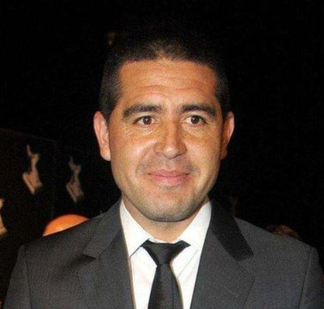

Juan Román Riquelme
Dirigente de fútbol profesional
- email: jrr10@gmail.com
- celular: 10000107
- ig: https://www.instagram.com/todosobreroman10/
- Divisiones Inferiores en Argentinos Juniors (1991-1996)
- Selección Argentina Sub 20 (1997-1998)
Experiencia laboral
- Divisiones Inferiores en Argentinos Juniors (1991-1996)
- Selección Argentina Sub 20 (1997-1998)
- Plantel Profesional de Club Atlético Boca Juniors (1996-2002, 2007-2014)
- Plantel Profesional de F. C. Barcelona, España (2002-2003)
- Plantel Profesional de Villarreal C. F., España (2003-2007)
- Plantel Profesional de F. C. Barcelona, España (2002-2003)
- Plantel Profesional de Argentinos Juniors, Argentina (2014)
- Selección Argentina Mayor (1997-2008)
- Vicepresidente segundo del Club Atlético Boca Juniors (2019-actualidad)